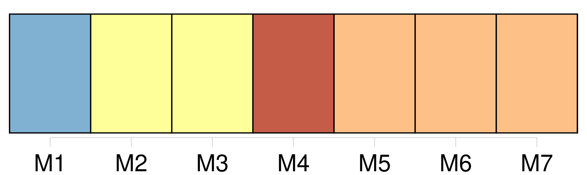
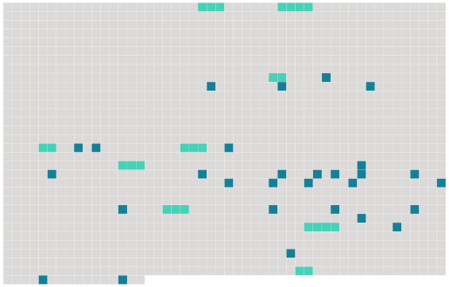

Longueur nb maillons : 38 mentions |
  |
Mon cousin se tourna vers moi : « Si tu veux, dit -il, nous irons tout à l'heure voir [ces pauvres gens] » Il voulait parler de [la famille du vieux] , son petit-fils, âgé de cinquante-huit ans, et sa petite belle-fille, d'une année plus jeune. [18 phrases] En approchant du hameau, Jules se ressouvint [des Fournel] --« Voici [leur] baraque, dit -il : entrons!! [1 phrases] Alors une voisine, qui sortait de chez elle pour se rendre à l'église, nous ayant aperçus : --« [Ils] sont à la messe, messieurs ; [ils] vont prier pour le père.
» [13 phrases] Un filet de lumière passait sous la porte [des Fournel] « [Ils] veillent [leur] mort, dit mon cousin. Entrons enfin chez [ces pauvres gens] , cela [leur] fera plaisir. [3 phrases]
--Et [les deux Fournel] , l'homme et la femme, réveillonnaient en tête-à-tête. Mornes, avec l'air navré et la face abrutie des paysans, [ils] mangeaient gravement sans dire un mot. Dans une seule assiette, posée entre [eux] , un grand morceau de boudin dégageait sa vapeur empestante.
De temps en temps, [ils] en arrachaient un bout avec la pointe de [leur] couteau, l' [écrasaient] sur [leur] pain qu' [ils] coupaient en bouchées, puis [mâchaient] avec lenteur. [1 phrases]
A notre entrée, [ils] se levèrent, nous [firent] asseoir, nous [offrirent] de « faire comme [eux] », et, sur notre refus, se [remirent] à manger. [7 phrases]
» [Les deux paysans] , jusque -là placides, s'émurent brusquement.
[Leurs] yeux inquiets s'interrogèrent, et [ils] ne répondirent pas.
Mon cousin, voyant [leur] trouble, insista. [1 phrases] --A rien, dit Jules, mais ça se fait tous les jours ; pourquoi ne voulez [-vous] pas le montrer?? [4 phrases] Comme [les petits-enfants du mort] ne remuaient toujours pas, et [demeuraient] face à face, les yeux baissés, avec cette tête de bois des gens mécontents, qui semble dire : « Allez -vous -en, » mon cousin parla avec autorité : « Allons, Anthime, levez -vous, et conduisez -nous dans sa chambre. [3 phrases]
» [1 phrases]
[Ses enfants] avaient réveillonné dessus! Jules, indigné, tremblant de colère, cria : « Pourquoi ne l'avez [-vous] pas laissé dans son lit, manants que [vous] êtes?? |
 |
La ressource peut être téléchargée sur la page Ortolang
Si vous avez des questions ou vous voyez des erreurs, merci d'envoyer un mail à silvia.federzoni89@gmail.com
Site développé par S. Federzoni (contact)